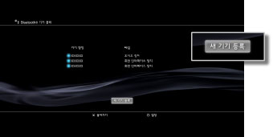

Bluetooth® 기기 관리
Bluetooth®에 대응하는 기기를 등록하거나 관리합니다.
Bluetooth® 기기 등록하기
1. |
Bluetooth® 대응 기기와 패스 키를 준비합니다. |
|---|---|
2. |
|
3. |
[Bluetooth® 기기 관리]를 선택합니다. |
4. |
[새 기기 등록]을 선택해 주십시오.  |
5. |
[검색 시작]을 선택합니다. |
6. |
등록할 기기를 선택합니다. |
 (설정)에서
(설정)에서  (주변기기 설정)을 선택합니다.
(주변기기 설정)을 선택합니다.알아두기
- 등록할 수 있는 Bluetooth® 기기의 대수를 넘은 경우에는 등록된 기기 목록에서 필요없는 기기를 삭제해 주십시오.
- Bluetooth® 대응 기기의 사용법에 대한 상세한 사항은 사용하시는 기기의 사용설명서를 참조해 주십시오.
Bluetooth® 기기 관리하기
기기의 정보를 확인하거나 접속/해제를 할 수 있습니다. 등록한 기기 목록에서 관리할 기기를 선택한 후  버튼을 눌러 옵션 메뉴에서 항목을 선택합니다.
버튼을 눌러 옵션 메뉴에서 항목을 선택합니다.